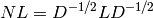

This documentation is for version 1.6.dev_20110822230031, which is not released yet.
Return the normalized Laplacian matrix of G.
The normalized graph Laplacian is the matrix

where is the graph Laplacian and is the diagonal matrix of node degrees.
| Parameters : | G : graph
nodelist : list, optional
weight : string or None, optional (default=’weight’)
|
|---|---|
| Returns : | L : NumPy array
|
See also
Notes
For MultiGraph/MultiDiGraph, the edges weights are summed. See to_numpy_matrix for other options.
References
| [R224] | Fan Chung-Graham, Spectral Graph Theory, CBMS Regional Conference Series in Mathematics, Number 92, 1997. |